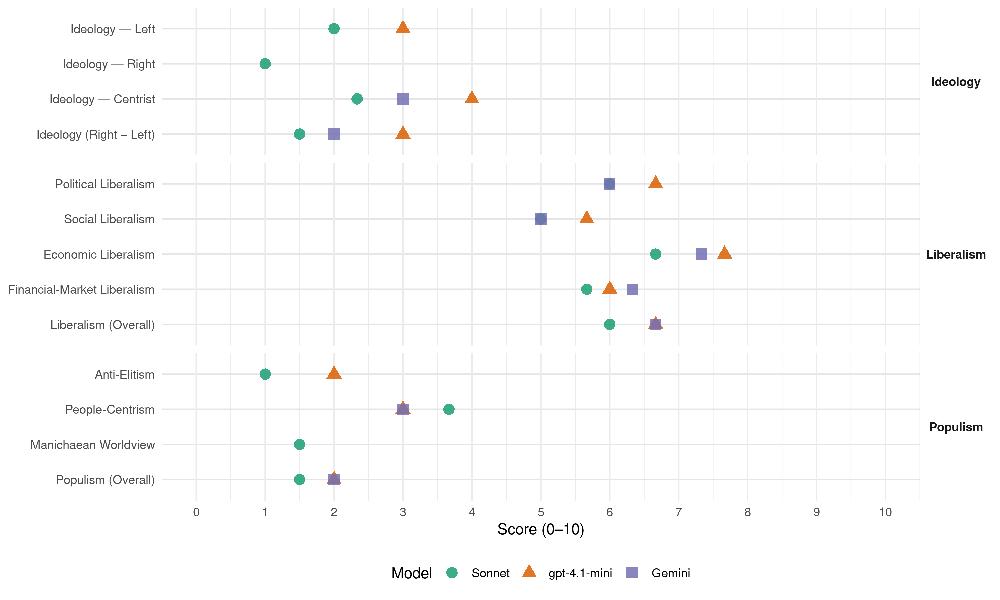

(Ireland, 1982)
manifesto_id 53620_198211
Get full text: This site shows derived annotations and short verbatim quotes only. The full manifesto text is © Manifesto Project / WZB — obtain it via manifesto-project.wzb.eu using the manifesto_id above.
Headline scores
| Dimension | Sonnet | gpt-4.1-mini | Gemini |
|---|---|---|---|
| Populism (Overall) | 1.5 | 2.0 | 2.0 |
| Anti-Elitism | 1.0 | 2.0 | – |
| People-Centrism | 3.7 | 3.0 | 3.0 |
| Manichaean Worldview | 1.5 | – | – |
| Ideology (Right − Left) | 1.5 | 3.0 | 2.0 |
| Liberalism (Overall) | 6.0 | 6.7 | 6.7 |
| Political Liberalism | 6.0 | 6.7 | 6.0 |
| Social Liberalism | 5.0 | 5.7 | 5.0 |
| Economic Liberalism | 6.7 | 7.7 | 7.3 |
| Financial-Market Liberalism | 5.7 | 6.0 | 6.3 |
Evidence per dimension
Economic Liberalism
Gemini · score 7.0 · verified · chunk 1
“conducive to private investment”
create an economic environment conducive to private investment and to ensure
Gemini · score 8.0 · verified · chunk 2
“response of the private sector to the new economic environment”
timetable to which growth is realised will depend on how favourable developments are on the international scene and on the response of the private sector to the new economic environment being created
Gemini · score 7.0 · verified · chunk 3
“competitive in the market place”
under State control is efficient and competitive in the market place and that the cost of security measures are identified
gpt-4.1-mini · score 8.0 · verified · chunk 1
“to create a more cost-competitive economy which is the only basis on which we can expand output”
The essential objectives of the Plan can be simply summarised: - to halt and reverse the trend in unemployment so that, by the end of the Plan period, employment could be growing twice as fast as the labour force; - by lowering inflation and interest rates and more moderate trends in incomes and taxation, to create a more cost-competitive economy which is the only basis on which we can expand output, increase employment and maintain existing jobs; - to improve social equity in our society by reducing unemployment, making the taxation system more equitable, and ensuring that public services are provided in accordance with need;
gpt-4.1-mini · score 7.0 · verified · chunk 2
“policies to reduce inflation, to achieve moderate wage increases, to bring the growth in public expenditure and taxation under control”
- creating, as far as it is possible within the power of Government, an environment in which manufacturing investment can be undertaken with greater confidence; policies to reduce inflation, to achieve moderate wage increases, to bring the growth in public expenditure and taxation under control, to maintain a consistent and attractive package of incentives and to provide the basic support services and infrastructure will be of particular importance in this respect;
gpt-4.1-mini · score 8.0 · verified · chunk 3
“competitive conditions essential for growth in employment”
The Plan proposes stringent measures to restore balance in the public finances, including elimination of the current budget deficit by 1986, to halt and reverse the trends of the last decade in public expenditure, to moderate the growth in taxation and make it more equitable, to create the competitive conditions essential for growth in employment, to accelerate the productive and economic infrastructure investment programmes essential for development, and to bring new criteria of efficiency to bear throughout the public sector.
Sonnet · score 7.0 · verified · chunk 1
“more competitive productive sector”
progressively create a modern economy capable of providing employment for our rapidly-growing labour force, an expanding and more competitive productive sector
Sonnet · score 7.0 · verified · chunk 2
“improve our relative cost position”
only be achieved if we can improve our relative cost position, make greater progress in improving non-cost factors such as management expertise
Sonnet · score 6.0 · verified · chunk 3
“principle of commercial viability is effectively adopted”
the Government have been undertaking a fundamental reappraisal… intend to ensure that in future the principle of commercial viability is effectively adopted by all commercial transport State companies
Financial-Market Liberalism
Gemini · score 6.0 · verified · chunk 1
“market in Irish Government securities”
further development of the market in Irish Government securities; an effort to
Gemini · score 7.0 · verified · chunk 2
“provision of more venture capital for industry”
banking sector should play a more active direct role in the industrial promotion programme through, for example, the provision of more venture capital for industry and developing further
Gemini · score 6.0 · verified · chunk 3
“raise the capital required”
established, it will be a matter entirely for the Board to raise the capital required. Tariffs for telecommunications services have been set and
gpt-4.1-mini · score 6.0 · verified · chunk 1
“The Government will consider further, in consultation with the Central Bank and other relevant interests, how this might best be carried out.”
The importance of the financial sector in a modern economy is self-evident. At this stage of our economic and social development, a fresh appraisal of the operation of our financial institutions and how they can contribute to the further progress envisaged in this Plan would be appropriate. The Government will consider further, in consultation with the Central Bank and other relevant interests, how this might best be carried out.
Sonnet · score 6.0 · verified · chunk 1
“market in Irish Government securities”
The Government propose, nevertheless, to examine the possible scope for further development of the market in Irish Government securities
Sonnet · score 6.0 · verified · chunk 2
“provision of more venture capital for industry”
banking sector should play a more active direct role in the industrial promotion programme through, for example, the provision of more venture capital for industry
Sonnet · score 5.0 · verified · chunk 3
“raise an appreciable amount of the investment capital from private sources”
It is proposed to raise an appreciable amount of the investment capital from private sources via Irish Telecommunications Investments (ITI)
Political Liberalism
Gemini · score 7.0 · verified · chunk 2
“actions of the Government under the Plan”
response of the private sector to the new economic environment being created by the actions of the Government under the Plan.
Gemini · score 5.0 · verified · chunk 3
“demands arising from the Parliamentary process”
discontinued; - the demands arising from the Parliamentary process will be discussed by the Department of the Public
gpt-4.1-mini · score 7.0 · verified · chunk 1
“The Government are confident that the cooperation and consent of all responsible citizens will be forthcoming”
Such a combination of events would clearly undermine our society and, therefore, cannot be contemplated even if some minority sectors of opinion will oppose the sensible and moderate measures and decisions necessary to avert these events. We need courage, determination and unity of purpose to reverse and correct the present trends. The Government are giving the firm leadership required. They have already initiated, and will continue to implement, the measures necessary to avert the grim consequences we face if we fail to take the sensible and prudent measures necessary. The Government are confident that the cooperation and consent of all responsible citizens will be forthcoming for the cumulatively beneficial course of action they outline in this Plan.
gpt-4.1-mini · score 6.0 · verified · chunk 2
“Government Departments and public agencies will pay greater attention to those of their activities which impinge on tourism”
- the scope for reducing excessive overseas travel will be examined. - Government Departments and public agencies will pay greater attention to those of their activities which impinge on tourism and thereby release Bord Failte resources to concentrate on the primary aim of increasing the volume of tourist business and raising standards and services throughout the industry;
gpt-4.1-mini · score 7.0 · verified · chunk 3
“democracy, rights, elections, courts, media, government, parliament”
Topic check: a verbatim quote for lib_political must mention democracy, rights, elections, courts, media, government, parliament, or a related political-institution term.
Sonnet · score 6.0 · verified · chunk 1
“Western democracies as they come slowly out”
adjustment to the new challenging conditions facing all the Western democracies as they come slowly out of the long recession
Sonnet · score 6.0 · verified · chunk 2
“Government Departments and public agencies will pay greater attention”
Government Departments and public agencies will pay greater attention to those of their activities which impinge on tourism
Sonnet · score 6.0 · verified · chunk 3
“legislation at present before the Dail”
It is the Government’s policy to re-organise this service as a commercial State-sponsored body… as soon as the necessary legislation at present before the Dail can be enacted
Liberalism (Overall)
Gemini · score 7.0 · verified · chunk 1
“conducive to private investment”
create an economic environment conducive to private investment and to ensure
Gemini · score 7.0 · verified · chunk 2
“response of the private sector to the new economic environment”
timetable to which growth is realised will depend on how favourable developments are on the international scene and on the response of the private sector to the new economic environment being created
Gemini · score 6.0 · verified · chunk 3
“competitive in the market place”
under State control is efficient and competitive in the market place and that the cost of security measures are identified
gpt-4.1-mini · score 7.0 · verified · chunk 1
“to improve social equity in our society by reducing unemployment”
The essential objectives of the Plan can be simply summarised: - to halt and reverse the trend in unemployment so that, by the end of the Plan period, employment could be growing twice as fast as the labour force; - by lowering inflation and interest rates and more moderate trends in incomes and taxation, to create a more cost-competitive economy which is the only basis on which we can expand output, increase employment and maintain existing jobs; - to improve social equity in our society by reducing unemployment, making the taxation system more equitable, and ensuring that public services are provided in accordance with need;
gpt-4.1-mini · score 6.0 · verified · chunk 2
“policies to reduce inflation, to achieve moderate wage increases, to bring the growth in public expenditure and taxation under control”
- creating, as far as it is possible within the power of Government, an environment in which manufacturing investment can be undertaken with greater confidence; policies to reduce inflation, to achieve moderate wage increases, to bring the growth in public expenditure and taxation under control, to maintain a consistent and attractive package of incentives and to provide the basic support services and infrastructure will be of particular importance in this respect;
gpt-4.1-mini · score 7.0 · verified · chunk 3
“competitive conditions essential for growth in employment”
The Plan proposes stringent measures to restore balance in the public finances, including elimination of the current budget deficit by 1986, to halt and reverse the trends of the last decade in public expenditure, to moderate the growth in taxation and make it more equitable, to create the competitive conditions essential for growth in employment, to accelerate the productive and economic infrastructure investment programmes essential for development, and to bring new criteria of efficiency to bear throughout the public sector.
Sonnet · score 6.0 · verified · chunk 1
“competitive economy which is the only basis”
to create a more cost-competitive economy which is the only basis on which we can expand output, increase employment
Sonnet · score 6.0 · verified · chunk 2
“improve our relative cost position”
only be achieved if we can improve our relative cost position, make greater progress in improving non-cost factors such as management expertise
Sonnet · score 6.0 · verified · chunk 3
“price at which energy supplies… sold will be determined by the market”
The price at which energy supplies at the disposal of the State is sold will be determined by the market to the greatest extent possible but will be sufficient to cover the investment and security costs involved.
Anti-Elitism
gpt-4.1-mini · score 2.0 · verified · chunk 1
“Selfish attitudes and the pursuit of sectional interests must give way”
Our economy now stands decisively at the threshold of a new economic era. Selfish attitudes and the pursuit of sectional interests must give way to a more responsible approach which recognises our vital common interest in averting the economic and social dangers which threaten us.
Sonnet · score 1.0 · verified · chunk 1
“some minority sectors of opinion will oppose”
cannot be contemplated even if some minority sectors of opinion will oppose the sensible and moderate measures
Sonnet · score 1.0 · verified · chunk 2
“failures in management, product design or marketing”
existing jobs will continue to be lost through technological change, competition which cannot be matched or failures in management, product design or marketing
Sonnet · score 1.0 · mixed · chunk 3
“divisions and disunity to deflect us”
We cannot allow divisions and disunity to deflect us from the national measures we must take.
Ideology — Centrist
Gemini · score 3.0 · verified · chunk 1
“future welfare of the Irish people”
objective is simply the future welfare of the Irish people. The plan shows
gpt-4.1-mini · score 4.0 · verified · chunk 1
“All that remains now is for the Irish people in their wisdom to accept”
It is firmly grounded on realistic assessments and attainable goals. It is the only way forward. All that remains now is for the Irish people in their wisdom to accept and to rally behind it with optimism, courage and determination.
Sonnet · score 3.0 · verified · chunk 1
“united national effort which the success”
more than sufficient to justify the united national effort which the success of this National Economic Plan demands
Sonnet · score 1.0 · verified · chunk 2
“new spirit of co-operation between both management and workers”
A new spirit of co-operation between both management and workers will be essential. Industrial policies will be directed specifically
Sonnet · score 3.0 · verified · chunk 3
“national consensus on economic and social growth”
require a national consensus on economic and social growth and, in particular, on its distribution.
Ideology — Left
gpt-4.1-mini · score 3.0 · verified · chunk 1
“to improve social equity in our society by reducing unemployment”
The essential objectives of the Plan can be simply summarised: - to halt and reverse the trend in unemployment so that, by the end of the Plan period, employment could be growing twice as fast as the labour force; - by lowering inflation and interest rates and more moderate trends in incomes and taxation, to create a more cost-competitive economy which is the only basis on which we can expand output, increase employment and maintain existing jobs; - to improve social equity in our society by reducing unemployment, making the taxation system more equitable, and ensuring that public services are provided in accordance with need; - to create the kind of economy and society in which sufficient resources can be made available to protect the living standards of those who must rely on long-term social welfare benefits and in which fraud and abuse of the social welfare system are eliminated;
Sonnet · score 2.0 · verified · chunk 1
“improve social equity in our society”
to improve social equity in our society by reducing unemployment, making the taxation system more equitable
Sonnet · score 2.0 · verified · chunk 2
“worker participation and the content of a voluntary code”
discussions will include the issues of worker participation and the content of a voluntary code of practice on the disclosure of company/enterprise information
Sonnet · score 2.0 · verified · chunk 3
“social policies are progressive and not regressive”
the very fact that our financial resources are limited must make us ensure that our social policies are progressive and not regressive in their application.
Ideology (Right − Left)
Gemini · score 2.0 · verified · chunk 1
“future welfare of the Irish people”
objective is simply the future welfare of the Irish people. The plan shows
gpt-4.1-mini · score 3.0 · verified · chunk 1
“All that remains now is for the Irish people in their wisdom to accept”
It is firmly grounded on realistic assessments and attainable goals. It is the only way forward. All that remains now is for the Irish people in their wisdom to accept and to rally behind it with optimism, courage and determination.
Sonnet · score 2.0 · verified · chunk 1
“programme for national recovery”
The plan outlined in this document is a programme for national recovery. It’s objective is simply the future welfare
Sonnet · score 1.0 · verified · chunk 2
“new spirit of co-operation between both management and workers”
A new spirit of co-operation between both management and workers will be essential. Industrial policies will be directed specifically
Sonnet · score 2.0 · mixed · chunk 3
“national consensus on economic and social growth”
require a national consensus on economic and social growth and, in particular, on its distribution.
Ideology — Right
Sonnet · score 1.0 · verified · chunk 1
“our membership of the European Economic Community”
our natural resources in minerals, oil, gas and marine resources, yet not fully assessed or exploited; our membership of the European Economic Community
Sonnet · score 1.0 · verified · chunk 2
“import substitution potential which exists”
exploitation of the significant import substitution potential which exists for manufactured goods, the promotion of greater linkage
Manichaean Worldview
Sonnet · score 2.0 · verified · chunk 1
“Selfish attitudes and the pursuit of sectional interests”
Selfish attitudes and the pursuit of sectional interests must give way to a more responsible approach
Sonnet · score 1.0 · verified · chunk 2
“moderate degree of sacrifice in income expectation”
we must be prepared, even more than other countries, to accept the moderate degree of sacrifice in income expectation which the Plan proposes
People-Centrism
Gemini · score 3.0 · verified · chunk 1
“future welfare of the Irish people”
objective is simply the future welfare of the Irish people. The plan shows
gpt-4.1-mini · score 3.0 · verified · chunk 1
“All that remains now is for the Irish people in their wisdom to accept”
It is firmly grounded on realistic assessments and attainable goals. It is the only way forward. All that remains now is for the Irish people in their wisdom to accept and to rally behind it with optimism, courage and determination.
Sonnet · score 5.0 · verified · chunk 1
“the Irish people in their wisdom”
All that remains now is for the Irish people in their wisdom to accept and to rally behind it with optimism
Sonnet · score 2.0 · verified · chunk 2
“providing employment for our young people”
This is the measure of our special problem in providing employment for our young people. It is the reason why we must be prepared
Sonnet · score 4.0 · verified · chunk 3
“The decision is for the nation to take”
This Plan shows how we can build an economy to support this growing population if we have the will, courage and responsibility that is required. The decision is for the nation to take now.
Populism (Overall)
Gemini · score 2.0 · verified · chunk 1
“future welfare of the Irish people”
objective is simply the future welfare of the Irish people. The plan shows
gpt-4.1-mini · score 2.0 · verified · chunk 1
“Selfish attitudes and the pursuit of sectional interests must give way”
Our economy now stands decisively at the threshold of a new economic era. Selfish attitudes and the pursuit of sectional interests must give way to a more responsible approach which recognises our vital common interest in averting the economic and social dangers which threaten us.
Sonnet · score 2.0 · verified · chunk 1
“unite in national will, resolve and action”
we must unite in national will, resolve and action as we have so often done in the past in the face of adversity
Sonnet · score 1.0 · verified · chunk 2
“providing employment for our young people”
This is the measure of our special problem in providing employment for our young people. It is the reason why we must be prepared
Sonnet · score 2.0 · mixed · chunk 3
“decision to take them or not is for all the people”
This Plan outlines the measures we must take. The decision to take them or not is for all the people.
Social Liberalism